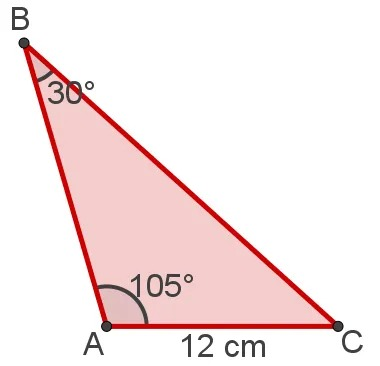
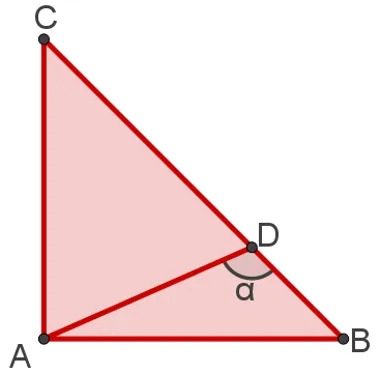
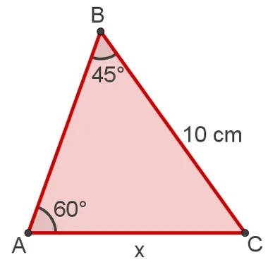
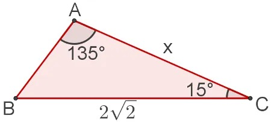

Exercícios
1-Qual das seguintes opções é uma possível medida do seno de um ângulo?
a) 0.5
b) 100
c) 90
Responder
2-Qual é o intervalo de valores possíveis para o seno de um ângulo?
a) [-1, 1]
b) [0, 1]
c) [0, ∞]
Responder
3-Qual é a relação entre o seno de um ângulo e o cateto oposto em um triângulo retângulo?
a) Seno = Hipotenusa / Cateto Oposto
b) Seno = Cateto Adjacente / Hipotenusa
c) Seno = Cateto Oposto / Hipotenusa
Responder
4-A função seno é limitada:
a) Verdadeiro
b) Falso
c) Depende do ângulo
Responder
5 - Três ilhas A, B e C aparecem num mapa em escala 1:10000, como na figura. Das alternativas, a que melhor se aproxima de distância entre as ilhas A e B é:

a) 2,3 km
b) 2,1 km
c) 1,7 km
d) 1,4 km
Responder
6 - Sabendo-se que α = 120°, AB = AC = 1 cm, então AD é igual a:

a) √(3/2) cm
b) √2/3 cm
c) 2/√3 cm
d) √(2/3) cm
Responder
7 - No triângulo a seguir, determine a medida do lado AC, tendo em vista as medidas presentes nele. (Use √2 = 1,4 e √3 = 1,7).

a) 12,2 cm
b) 8,2 cm
c) 14 cm
d) 17,2 cm
Responder
8 - No triângulo a seguir, qual é a medida do segmento AC, destacada pela letra x, dado que essas medidas estão em centímetros?

a) 3√3 cm
b) √2/3 cm
c) 4√2 cm
d) 2 cm
Responder
9 - Qual é o valor do seno de um ângulo agudo de 30 graus?
a) 0
b) 1
c) 0,5
d) -1
Responder
10 - Qual é o valor do seno de 60°?
a) √3/2
b) 1/2
c) √2/2
Responder